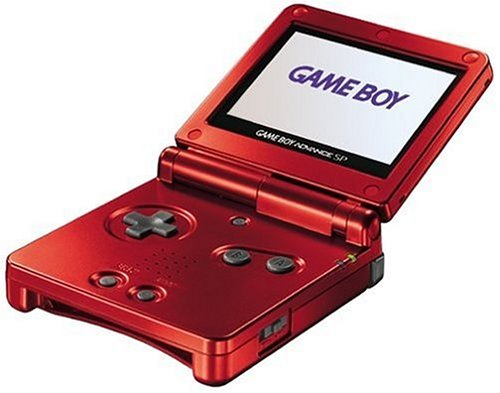
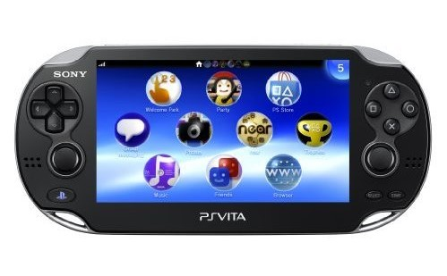
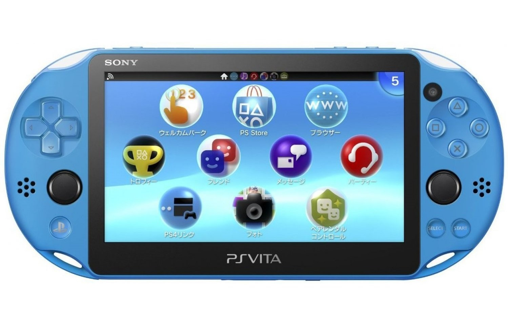

This is where you'll find handheld consoles I had!
The good old Nintendo from a simpler time...
I had this one years ago, I don't even remember what I played on it.
I do remember having to give it to my cousin when I got the PSVITA, and he broke it.
I will never forgive him. He also broke my PS2.
Underated gem of a hardware that got abandoned by Sony and everyone.
 This one is a sad story, the Vita had amazing potential, but barely got
any good games and first-party support. A shame, but the homebrew community
managed to keep it alive with emulator support and amazing plugins, hence why
I hacked it. I also bought the slim version recently since they are going up in prices.
The Vita done right.

My latest, main console. This is where I play while I don't have a PS5.
It's the perfect portable console that is everything the Vita should've
been, I am glad Nintendo made this, hopefully Sony will change their mind
and make a new Vita, with quality games and support.